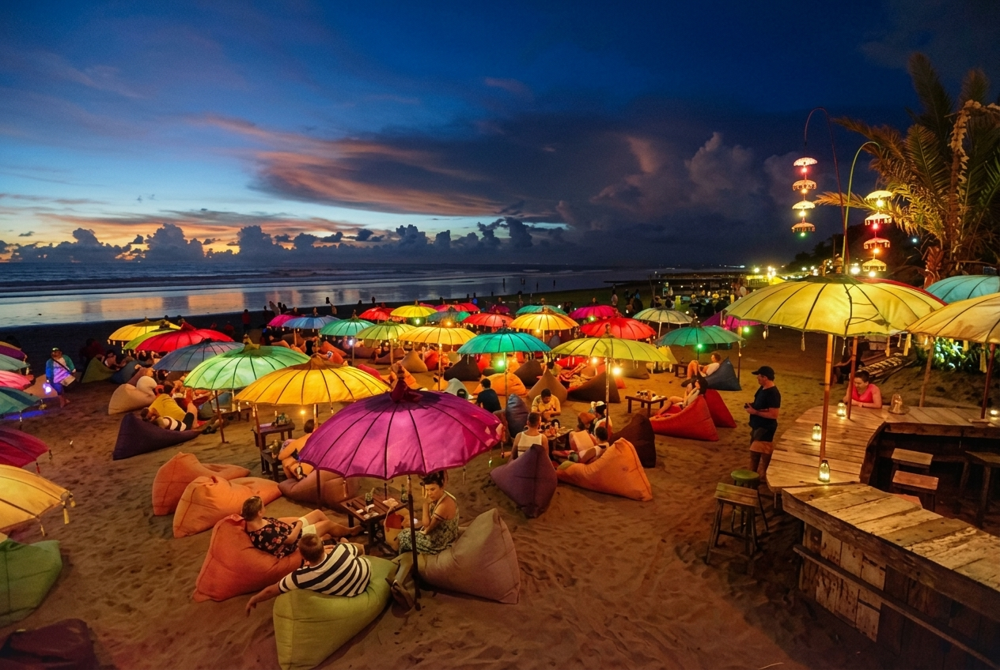
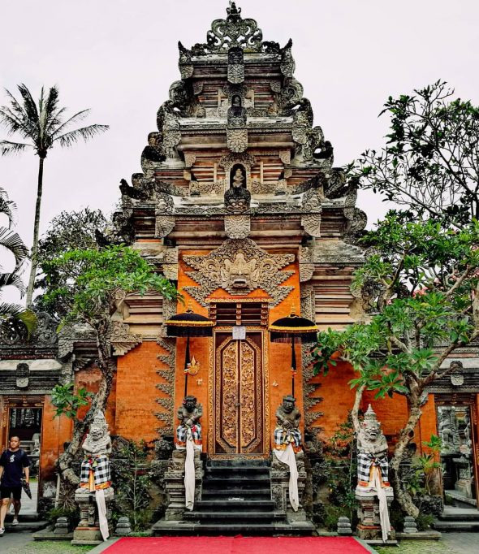
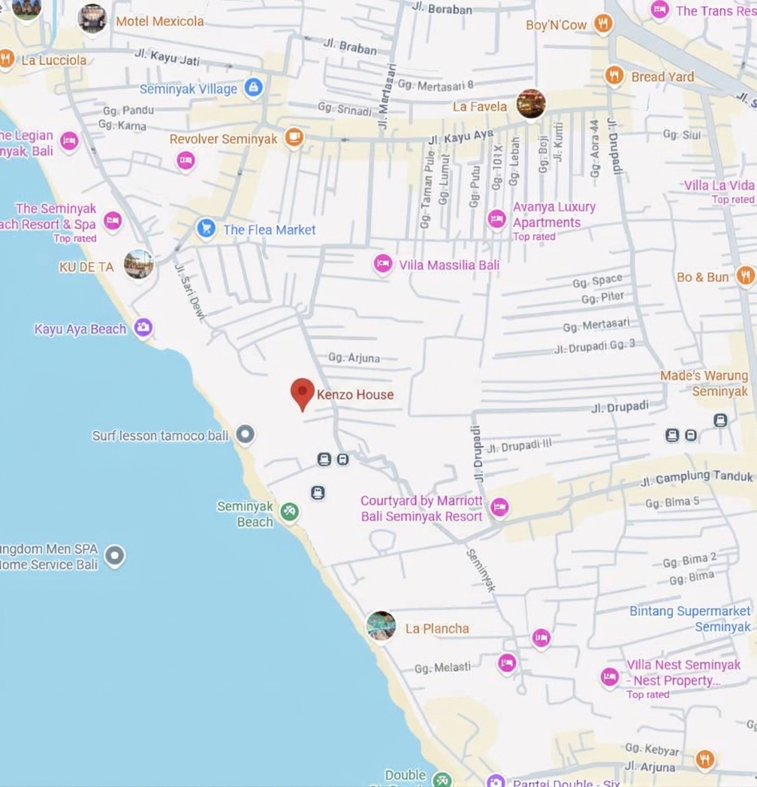
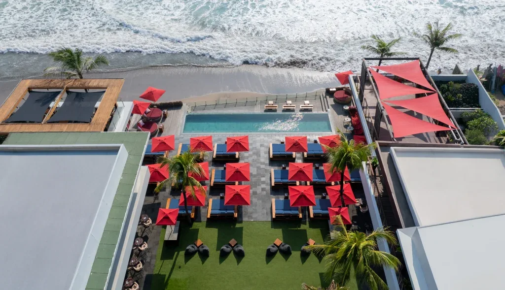
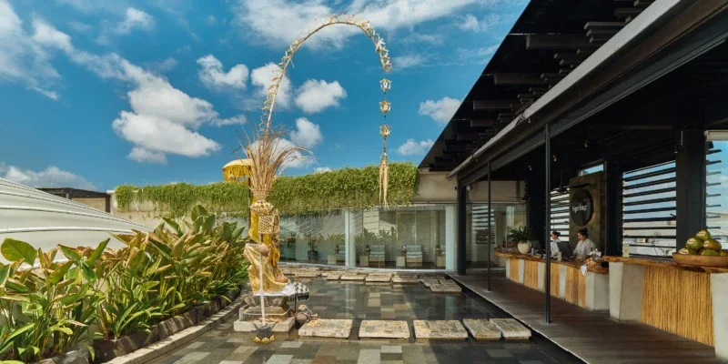
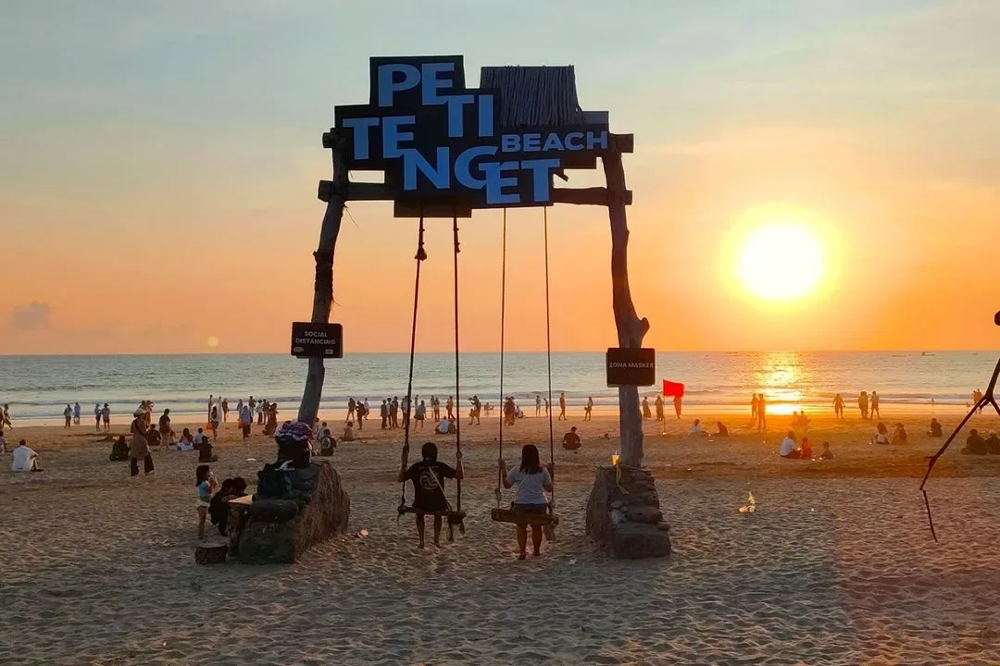

Culture
A sense of place.
Discover Balinese architecture and traditions around Seminyak. Ask your host about local temple visits, appropriate dress and cultural events during your stay.
Find Petitenget Temple on Google Maps04 / Location
In vibrant Seminyak, Kenzo House places Bali’s beaches, culture and culinary scene within easy reach, while remaining a private sanctuary of calm.



Culture
Discover Balinese architecture and traditions around Seminyak. Ask your host about local temple visits, appropriate dress and cultural events during your stay.
Find Petitenget Temple on Google Maps
Beachfront dining
Reserve a table on the Seminyak beachfront. Come before sunset for an ocean-facing aperitif, then stay for dinner.
Jl. Kayu Aya No. 9, SeminyakSurf lessons
Meet a local instructor at Double Six Beach for a first lesson on the sand and in the water. Ask the school which session suits your group.
Double Six Beach, Jl. Arjuna, Legian
Rooftop wellness
Head to the rooftop of Seminyak Village for a massage or a foot treatment. The terrace opens onto a landscaped garden.
Seminyak Village rooftop, Jl. Kayu Jati, Seminyak
Coastal walk
Follow the broad shoreline towards the temple grounds, or settle on the sand to watch the sun drop into the Indian Ocean.
Petitenget Beach, Seminyak, Badung